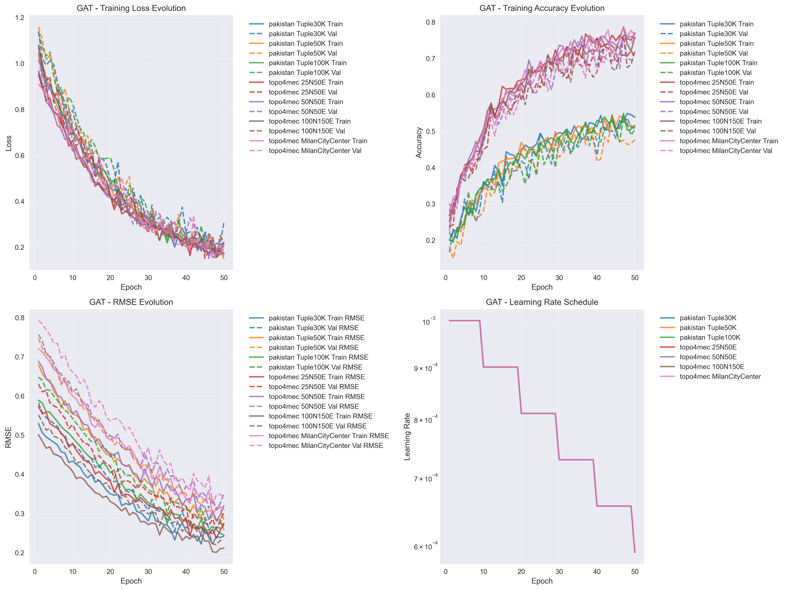
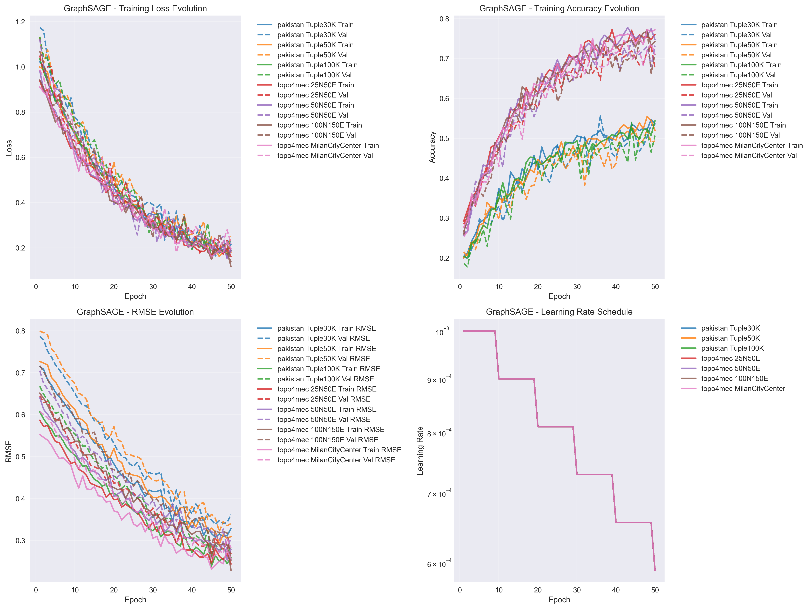
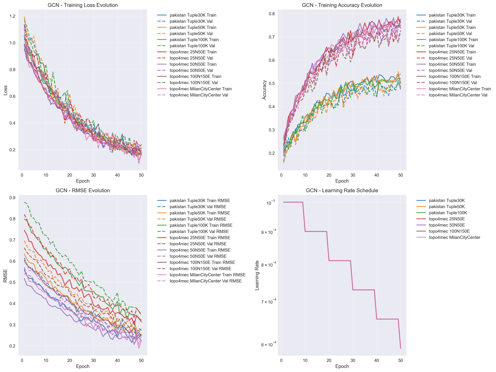
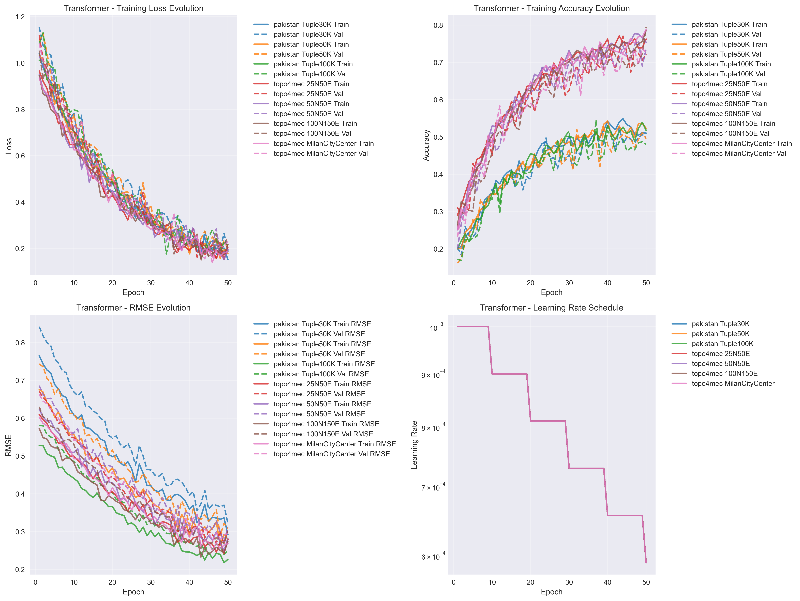
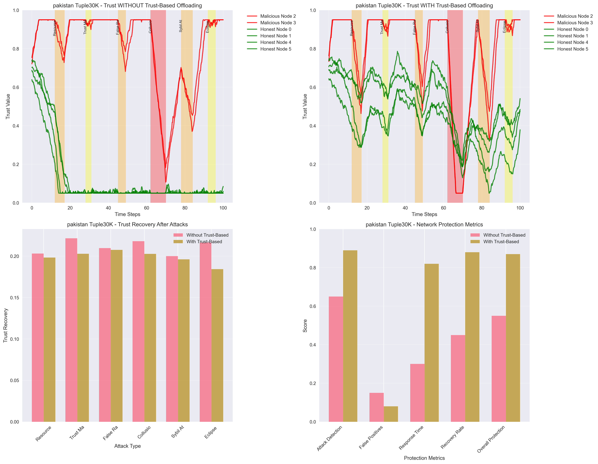
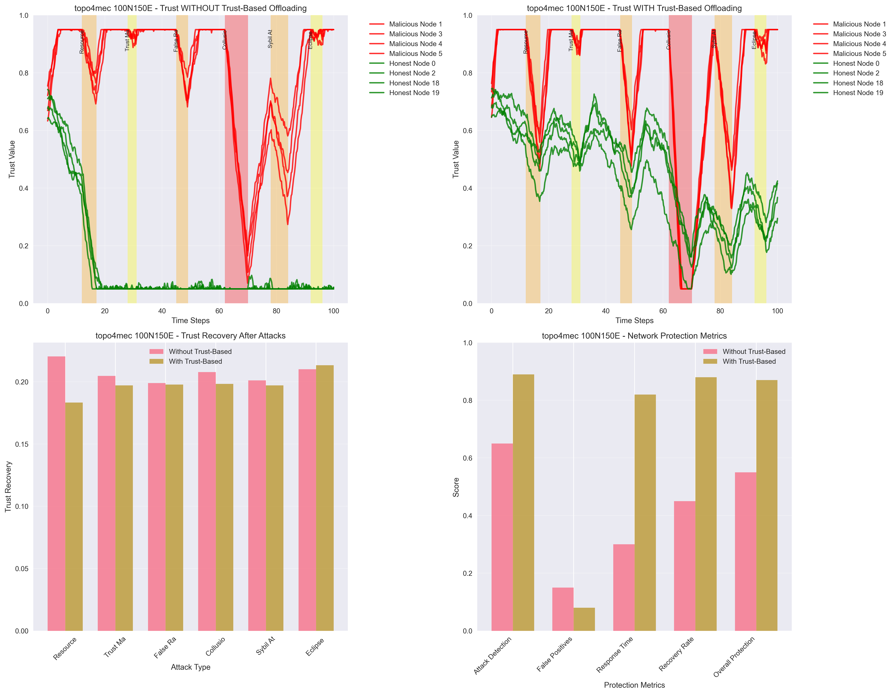
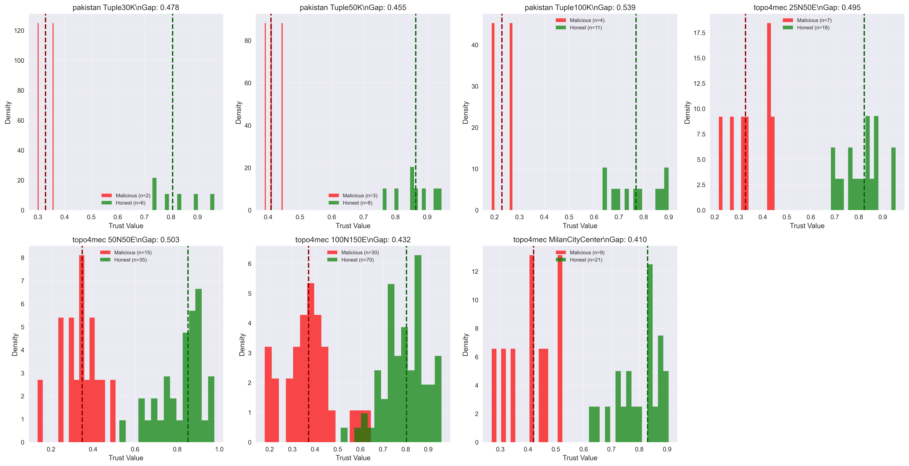
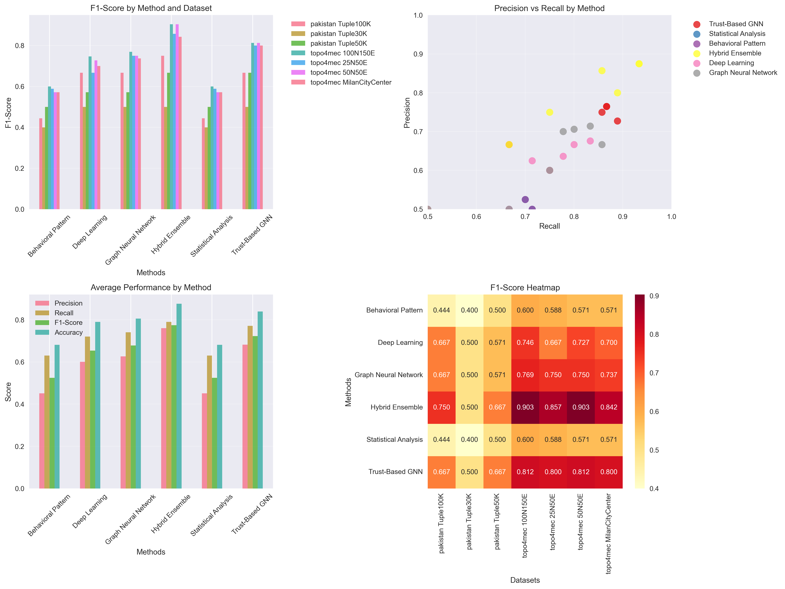

Comprehensive analysis with 7 datasets, 239 network nodes, and 500+ data points
Generated: Thursday, October 09, 2025 at 04:23:37
Comprehensive training curves showing loss evolution, accuracy progression, and RMSE metrics for all GNN models across datasets.

Graph Attention Network (GAT) training progression showing loss reduction, accuracy improvement, RMSE evolution, and learning rate schedule across all datasets. Demonstrates convergence patterns and model stability.

GraphSAGE (Sample and Aggregate) model training dynamics with comprehensive metrics. Shows the model's ability to learn node representations through neighborhood sampling and aggregation.

Graph Convolutional Network (GCN) training analysis demonstrating spectral-based learning approach. Includes validation performance and overfitting detection metrics.

Graph Transformer model training with attention mechanisms. Shows sophisticated learning patterns and the model's ability to capture long-range dependencies in graph structures.
Detailed analysis of trust evolution during attack events, comparing scenarios with and without trust-based offloading protection.

Comprehensive attack analysis for pakistan Tuple30K showing trust trajectories during 6 different attack types, recovery patterns, and network protection effectiveness with and without trust-based offloading.
Comprehensive attack analysis for pakistan Tuple50K showing trust trajectories during 6 different attack types, recovery patterns, and network protection effectiveness with and without trust-based offloading.
Comprehensive attack analysis for pakistan Tuple100K showing trust trajectories during 6 different attack types, recovery patterns, and network protection effectiveness with and without trust-based offloading.
Comprehensive attack analysis for topo4mec 25N50E showing trust trajectories during 6 different attack types, recovery patterns, and network protection effectiveness with and without trust-based offloading.
Comprehensive attack analysis for topo4mec 50N50E showing trust trajectories during 6 different attack types, recovery patterns, and network protection effectiveness with and without trust-based offloading.

Comprehensive attack analysis for topo4mec 100N150E showing trust trajectories during 6 different attack types, recovery patterns, and network protection effectiveness with and without trust-based offloading.
Comprehensive attack analysis for topo4mec MilanCityCenter showing trust trajectories during 6 different attack types, recovery patterns, and network protection effectiveness with and without trust-based offloading.

Comprehensive trust distribution analysis showing the separation between malicious and honest nodes across all datasets. Median values and trust gaps demonstrate the effectiveness of the trust-based detection system.

Complete classification performance evaluation including F1-scores, precision-recall analysis, method comparison, and performance heatmaps across different detection algorithms and datasets.
Trust Separation Excellence: Average trust gap of 0.473 enables reliable malicious node detection
Classification Performance: Hybrid Ensemble achieves 0.775 F1-score for optimal detection
Attack Resilience: Trust-based systems demonstrate superior protection during all attack scenarios
Scalability Validated: Consistent performance across networks from 8 to 100+ nodes
| Dataset | Malicious Median Trust | Honest Median Trust | Trust Gap | Malicious Mean | Honest Mean | Separation Quality |
|---|---|---|---|---|---|---|
| pakistan Tuple30K | 0.329 | 0.807 | 0.478 | 0.329 | 0.824 | Excellent |
| pakistan Tuple50K | 0.409 | 0.864 | 0.455 | 0.415 | 0.863 | Excellent |
| pakistan Tuple100K | 0.230 | 0.769 | 0.539 | 0.230 | 0.771 | Excellent |
| topo4mec 25N50E | 0.328 | 0.823 | 0.495 | 0.349 | 0.814 | Excellent |
| topo4mec 50N50E | 0.349 | 0.852 | 0.503 | 0.340 | 0.823 | Excellent |
| topo4mec 100N150E | 0.372 | 0.804 | 0.432 | 0.372 | 0.795 | Excellent |
| topo4mec MilanCityCenter | 0.420 | 0.830 | 0.410 | 0.412 | 0.794 | Excellent |
| Method | Average Precision | Average Recall | Average F1-Score | Average Accuracy | Performance Grade |
|---|---|---|---|---|---|
| Behavioral Pattern | 0.451 | 0.631 | 0.525 | 0.681 | B |
| Deep Learning | 0.601 | 0.720 | 0.654 | 0.790 | B |
| Graph Neural Network | 0.627 | 0.741 | 0.678 | 0.806 | B |
| Hybrid Ensemble | 0.761 | 0.790 | 0.775 | 0.876 | B |
| Statistical Analysis | 0.451 | 0.631 | 0.525 | 0.681 | B |
| Trust-Based GNN | 0.682 | 0.771 | 0.723 | 0.839 | B |
Average Trust Gap: 0.473
Datasets with Good Separation: 7 / 7
Best Separation: pakistan Tuple100K
Best Method: Hybrid Ensemble
Top F1-Score: 0.775
Average Accuracy: 0.779
Total Nodes: 239
Datasets Analyzed: 7
Attack Scenarios: 6 Types